Seminar · Trisanu Bhar · 48 slides
Test-time training: let the model keep learning while it reads.
A trained model normally freezes its weights before it sees a
test input. Test-time training (TTT) lets it take a few gradient
steps on each input first, using a task whose labels come from the
input itself. The seminar starts with that idea for images, then
follows it into language models, where the "hidden state" of a
recurrent layer becomes a small network trained token by token.
From there it covers Titans and its surprise-driven memory, the
older idea of fast weights, In-Place TTT (which reuses a
transformer's own MLP as the memory), and LaCT, which makes the
whole thing fast by updating on large chunks of tokens.
Seminar
48 slides
Trisanu Bhar
§0The deck at a glance
Slides 1–7 set up the problem of a test distribution that differs
from the training one, and give Sun et al.'s 2020 answer, a second
head trained on a self-supervised task that can still be computed
at test time. Slides 8–12 turn that into a sequence layer. The
recurrent state is now the weights of a small model, and each
token takes one gradient step on it. Slides 13–26 cover Titans,
building its memory update from linear attention, the delta rule,
momentum and forgetting, and then the three ways it wires memory
into attention. Slides 27–30 step back to Hebbian learning and
fast weights, which is where the "fast and slow weights" language
of TTT papers comes from. Slides 31–37 cover In-Place TTT, and
slides 38–43 cover LaCT. The deck closes with advice for anyone
doing research on TTT, and the citations.
One idea runs through the whole talk. A memory can be a set of
weights, and writing to it can be a gradient step on a
reconstruction loss. Lecture 14 met the same idea in
its TTT section, and the delta rule from
Assignment 3 is the simplest
case of it. This page reuses one small key-value example so you can see linear attention, the delta
rule and a TTT layer give different answers on the same inputs.
§1When test data looks different
A model trained on one distribution can fail badly on another, and nothing in its outputs warns you.
The opening slides state the problem and rule out the obvious
fixes.
Slide 01 / 48
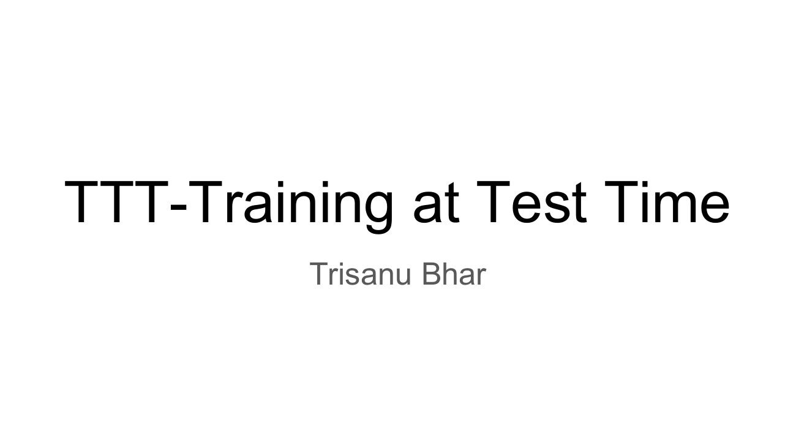
slide 01 · title
On the slide
The title. TTT stands for test-time training, which means updating a model's weights while it
is being used, not only while it is being trained.
Slide 02 / 48
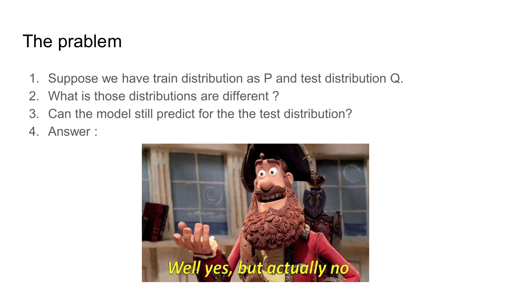
slide 02 · train on P, test on Q
On the slide
Training data comes from a distribution P and test data from Q. If
P ≠ Q, can the model still predict well? The meme's answer is "sort of, but not
really".
A toy shift
Take a one-number input u drawn from a standard normal, with label 1 when u > 0.
A model trained on this learns the rule "predict 1 if the input is positive". Now suppose every test
input arrives shifted by +2, as if every photo came from a brighter camera, so the model sees
x = u + 2 while the true label still depends on u.
- The model predicts 1 whenever u > −2, which is about 97.7% of inputs.
- It is right on the 50% with u > 0 and on the 2.3% with u < −2.
- Accuracy falls from 100% to about 52%, close to a coin flip.
Nothing about the model changed. Its weights were fitted to P, and on Q they draw
the boundary in the wrong place.
Slide 03 / 48
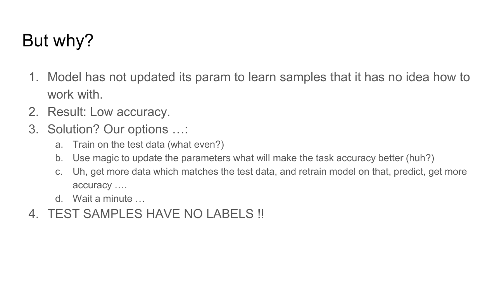
slide 03 · the fixes that don't work
On the slide
The model fails because its weights never adapted to the new kind of input. Each obvious fix
(train on the test data, collect matching data and retrain) runs into the same wall. Test inputs come
without labels.
Why "collect more data" is not an answer
Retraining needs labelled examples from Q, and you often do not know Q in advance.
A deployed model may see a new shift every day. What you do have is the test input itself. The rest
of the talk is about getting a training signal out of an input that has no label.
§2A self-supervised head
Sun et al. (2020) solve the missing-label problem by adding a
second task whose labels the model can make for itself, such as
"which way was this image rotated?".
Slide 04 / 48
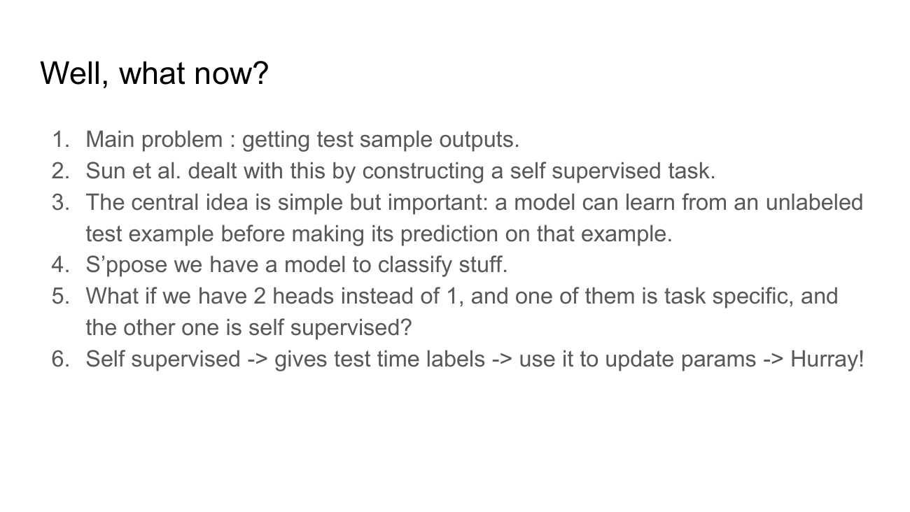
slide 04 · two heads, one shared body
On the slide
Give the classifier two heads on top of a shared feature extractor. One head does the real task. The
other does a self-supervised task whose label can be computed from the input alone. At test time the
self-supervised head still has a loss, so you can take a gradient step before predicting.
Why the shared body matters
The gradient step updates the shared feature extractor, not just the self-supervised head. If the
brighter test images confuse the features, learning to predict rotations on those same images pushes
the features to make sense of them again. The main head reads the same features, so it benefits too.
This works when fixing the features for one task also fixes them for the other, which is why the
two tasks need to depend on the same visual content.
Slide 05 / 48
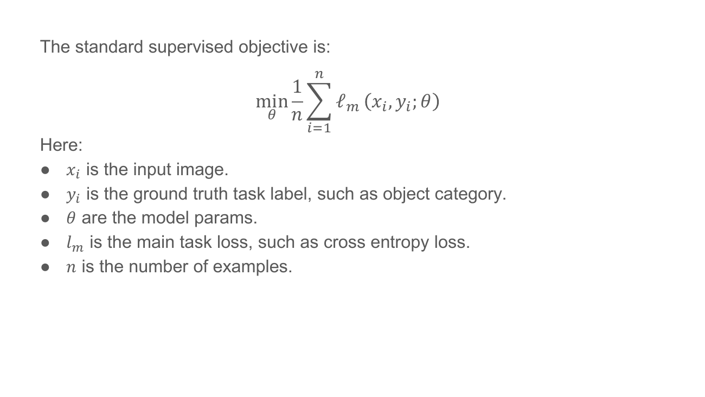
slide 05 · the ordinary training objective
On the slide
Plain supervised learning. Average the main-task loss ℓm (for example cross-entropy)
over n labelled examples and minimise it over the parameters θ.
This is the baseline. Everything in θ is fixed once training ends, which is exactly the assumption
TTT drops.
Slide 06 / 48
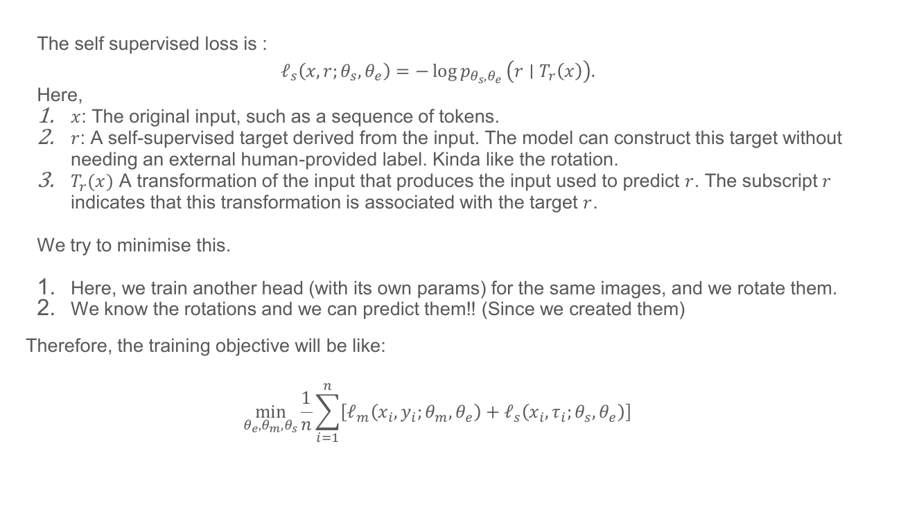
slide 06 · rotation prediction as the second task
On the slide
The parameters split into three parts. θe is the shared encoder,
θm is the main head and θs is the self-supervised head. The
self-supervised loss rotates the image by r (one of 0°, 90°, 180° or 270°) and asks the model
to name the rotation. Training minimises both losses together.
Reading the loss
Tr(x) is the rotated image. The model outputs a probability for
each of the four rotations, and ℓs is the negative log-probability of the right one.
The label r costs nothing, because you chose the rotation yourself.
⚠ Notation
The slide describes x as "a sequence of tokens" but the example is images, and the final
objective writes the rotation label as τi where the line above calls it
r. They are the same thing. Sun et al.'s paper uses images throughout.
Slide 07 / 48
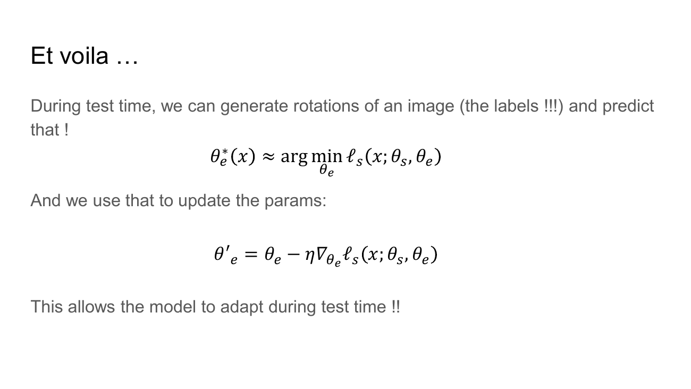
slide 07 · one gradient step per test input
On the slide
At test time, rotate the test image, compute the rotation loss, and take a gradient step on the
encoder θe only. Then predict the main label with the updated encoder.
One step, with numbers
Shrink the encoder to a single number g that scales the features. Suppose that, for this
test image, the self-supervised head gives the correct rotation a logit of g and the other
three rotations a logit of 0. Then
- p(correct) = eg / (eg + 3), and the loss is
−log p.
- The gradient of the loss with respect to g is −(1 − p).
Start at g = 0.5. Then p = 1.649 / 4.649 = 0.355 and the loss is 1.037. The gradient
is −0.645, so a step with η = 1 moves g to 1.145. Now p = 0.512 and the loss is
0.670. The encoder has adapted to this one image, and the main head sees the adapted features.
What happens to θe afterwards
In the simplest version the update is thrown away and the next test image starts again from the
trained θe. If test data arrives as a stream from the same shifted distribution,
you can instead keep the updated weights and carry them forward. The second option is the one that
turns into a sequence model in the next section.
§3TTT as a sequence layer
If you keep updating weights as inputs stream in, the weights
behave like the hidden state of an RNN. Sun et al. take that
literally and build a layer out of it.
Slide 08 / 48
![Ok, how do we extend this? 1. Sun et al. released another paper: Learning to (Learn at Test Time). 2. Idea is to have an inner loop and outer loop. Outer loop updates during training. Inner loop is trained with outer during training but also updates during testing. 3. During test time, we do reconstruction of the current token using a perturbed version of the same token. This acts as the self supervised task. 4. Sun et al. did experiments using 2 variants, MLP and Linear, for the inner loop and on ImageNet.](../assets/seminars/S-ttt/slide-08.png)
slide 08 · inner loop and outer loop
On the slide
The follow-up paper, "Learning to (Learn at Test Time)", has two loops. The inner loop takes gradient
steps on a self-supervised task, rebuilding each input from a corrupted copy of it. It runs during
both training and testing. The outer loop is ordinary training, and it runs only during training. The
first experiments used ImageNet, with a linear model or an MLP as the inner learner.
The two loops in plain words
The inner loop is a learner. The outer loop teaches that learner how to learn. It chooses how inputs
are corrupted, what the reconstruction target is and where the inner model starts, so that a few
inner steps on a test input produce features that help the real task. The parentheses in the title
say this. The model is learning to do a good job of learning at test time.
Slide 09 / 48
slide 09 · bringing it to language
On the slide
The language version is the 2025 paper "Learning to (Learn at Test Time): RNNs with Expressive Hidden
States". It puts the inner and outer loops inside an RNN.
The link is that a sequence is a stream. In text, the "test inputs" arriving one after another are
the tokens of a single document. Updating weights token by token is the same as updating a hidden
state token by token.
Slide 10 / 48

slide 10 · the hidden state is a model
On the slide
The hidden state is no longer a vector but the weights W of a small model f. The
update rule is one gradient step on a self-supervised loss for the current token. The output rule runs
the current token through f with the current weights. The inner model can be linear
(TTT-Linear) or a two-layer MLP (TTT-MLP).
Compared with an ordinary RNN
| Classic RNN | TTT layer |
|---|
| State | vector ht | weights Wt of f |
| Update | ht = σ(A ht−1 + B xt) | Wt = Wt−1 − η∇ℓ |
| Output | read from ht | f(xt; Wt) |
| Cost per token | fixed | fixed |
The state still has a fixed size, so the cost per token does not grow with the length of the
document, unlike attention's KV cache from
Lecture 5. What changes is how much a
state of that size can hold. A d × d matrix trained by gradient descent can store many key-value
associations, and an MLP can store a nonlinear map.
Slide 11 / 48
![Outer loop: task next token prediction, loss CE, during test time weights are frozen. Inner loop: task predict the current token, loss reconstruction, during test time weights are updated. K becomes θ_K x_t, the training view (the corrupted input fed to the inner model f for reconstruction). V becomes θ_V x_t, the label view (the reconstruction target). Q becomes θ_Q x_t, the test view (what's fed to f to produce the output token). Diagrams: a residual block with LayerNorm, sequence modeling block, LayerNorm, MLP block; and a Transformer backbone where V, K, Q feed a TTT layer followed by LayerNorm and O. The Transformer architecture is based on Llama, with RoPE, SwiGLU MLP blocks and RMSNorm instead of LayerNorm.](../assets/seminars/S-ttt/slide-11.png)
slide 11 · which weights learn when
On the slide
The two loops, made concrete. The outer loop trains the whole network for next-token prediction with
cross-entropy and is frozen at test time. The inner loop trains only W, with a reconstruction
loss, and keeps running at test time. The TTT layer slots in where self-attention would go in a
Llama-style block.
Three projections, three jobs
Each token xt is projected three ways, and the names echo attention on
purpose.
- kt = θKxt is the
input to the inner model during its training step (the "corrupted" view).
- vt = θVxt is what
the inner model should output for that input (the target).
- qt = θQxt is what
you feed the updated inner model to get the layer's output.
The projections θK, θV, θQ belong to
the outer loop, so they are learned in training and fixed at test time. This is where "learning to
learn" happens. The outer loop decides what the inner learner should try to memorise. The backbone
choices (RoPE,
SwiGLU, RMSNorm) are the usual Llama ones
and are not specific to TTT.
Slide 12 / 48
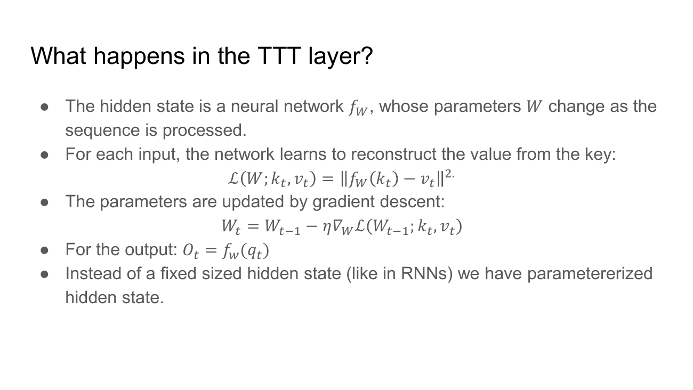
slide 12 · the update and output rules
On the slide
The inner loss asks f to map the key to the value. One gradient step on that loss gives the
new weights, and the output is f applied to the query with the new weights.
TTT-Linear, two tokens by hand
Let fW(k) = Wk with W a 2 × 2 matrix. Then
the gradient is ∇Wℒ = 2(Wk − v)k⊤. Start
from W0 = 0 and use η = 0.5.
| Token | k | v | Wt−1k | error | Wt |
|---|
| 1 | (1, 0) | (2, 1) | (0, 0) | (−2, −1) | [[2, 0], [1, 0]] |
| 2 | (0.6, 0.8) | (0, 3) | (1.2, 0.6) | (1.2, −2.4) | [[1.28, −0.96], [2.44, 1.92]] |
After token 2, querying with k2 returns (0, 3), exactly v2.
Querying with k1 returns (1.28, 2.44) rather than (2, 1). The second write
disturbed the first memory because the two keys overlap (k1 · k2
= 0.6). Keep these numbers in mind, because §5 and §6 run the same keys and values through linear
attention and the delta rule.
→ Same machinery, different name
For a linear f, this update is the delta rule. Lecture 14 shows the same reduction in
its TTT section. TTT-MLP swaps the
matrix for a two-layer MLP, which can store a nonlinear key-to-value map at a higher cost per
token.
§4Titans: memory trained at test time
Titans (Behrouz, Zhong and Mirrokni, 2025) treats a TTT-style
network as long-term memory and pairs it with ordinary attention
as short-term memory.
Slide 13 / 48
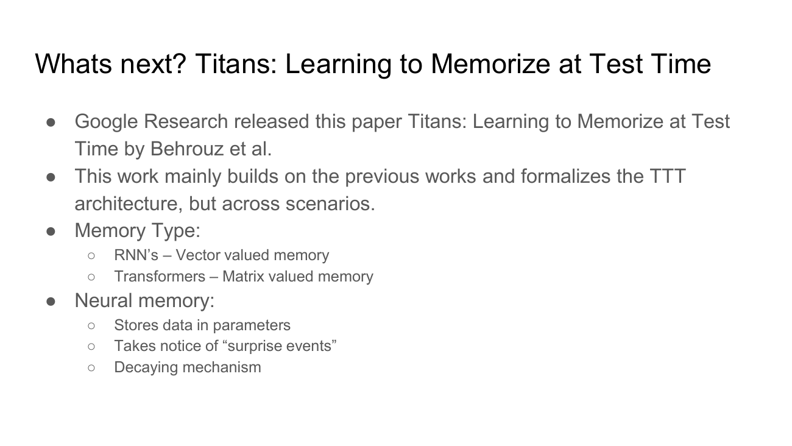
slide 13 · Titans' neural memory
On the slide
Titans builds on TTT and frames it as memory. Its neural memory keeps information in its parameters,
pays more attention to surprising inputs, and slowly forgets.
The three properties, before the math
- Stores data in parameters. Writing to memory is a gradient step, as in §3.
- Surprise. The size of the gradient measures how wrong the memory was about the
current token. A token the memory already predicts well barely changes it. A surprising one changes
it a lot.
- Decay. A forgetting factor shrinks old contents so the memory does not fill up
with stale associations.
⚠ Watch out
"Transformers have matrix-valued memory" is true for linear attention, whose state is a
d × d matrix (§5). Softmax attention has no compressed memory at all. It keeps every past key and
value, so its memory grows with the sequence.
Slide 14 / 48
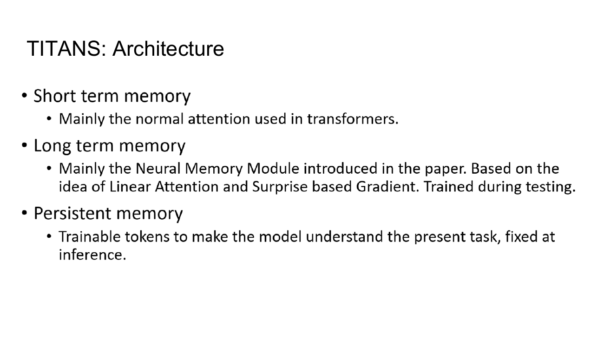
slide 14 · three kinds of memory
On the slide
Titans has three memories. Short-term memory is ordinary attention over a recent window. Long-term
memory is the neural memory module, trained at test time. Persistent memory is a set of learned tokens
that are fixed after training.
How they differ
| Memory | What it is | Changes at test time? |
|---|
| Short-term | attention over recent tokens | its contents do, its weights don't |
| Long-term | neural memory network | yes, its weights are updated |
| Persistent | learned tokens prepended to the input | no |
Persistent memory holds knowledge about the task that does not depend on the input, much as a
fixed system prompt would, except that the tokens are learned vectors rather than words.
§5Linear attention as a memory
To derive Titans' update, the deck starts from attention, removes
the softmax, and finds a matrix that is written to once per token.
Slide 15 / 48
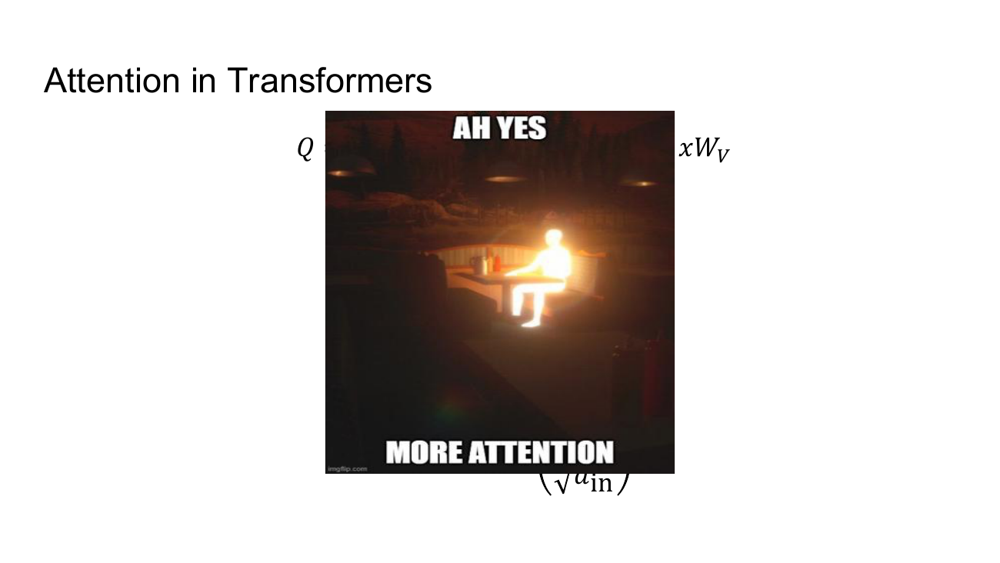
slide 15 · softmax attention, mostly hidden by a meme
On the slide
The meme covers the formula, but the slide is ordinary causal softmax attention from
Lecture 5. With Q =
xWQ, K = xWK and V =
xWV, the output at position i is
The exp couples each query to each key inside the sum, so every new query has to revisit every past
key. That is the O(t) cost per token that the next three slides remove.
Slide 16 / 48
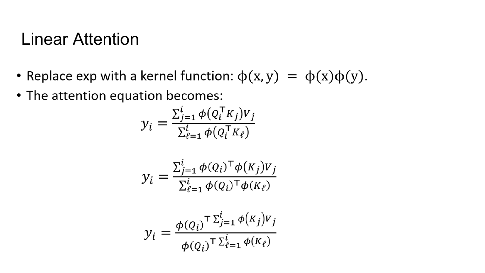
slide 16 · swap exp for a kernel and pull the query out
On the slide
Replace exp(q⊤k) with a similarity that factors as
φ(q)⊤φ(k). Then the query no longer sits inside the sum, so it can be
pulled out, leaving sums that do not depend on the query.
Why the last line is the whole trick
In the last line, Σj φ(Kj)Vj
is the same for every future query. You can keep it as a running total and add one term per token,
instead of revisiting all past keys. That running total is a d × d matrix, and it is the "memory"
of the next slides. Lecture 6
covers the same derivation.
⚠ Notation
The first line of the slide writes φ(x, y) = φ(x)φ(y) and
φ(Q⊤K). What is meant is a similarity sim(q, k) =
φ(q)⊤φ(k), with φ applied to each vector separately. The second
equation on the slide has it right.
Slide 17 / 48
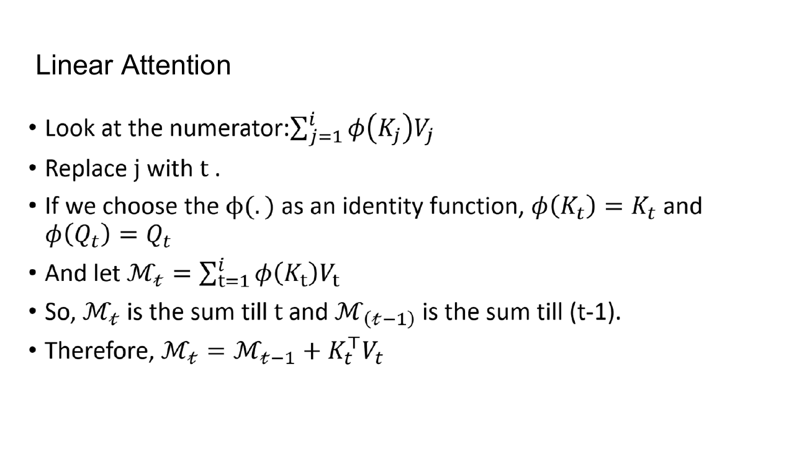
slide 17 · the running sum becomes a recurrence
On the slide
Take φ to be the identity and call the running numerator Mt. Each token
adds one outer product, so Mt = Mt−1 +
Kt⊤Vt.
Shapes
Here keys and values are row vectors of length d, so
Kt⊤Vt is a d × d
matrix. Every token adds one rank-1 matrix to M. The memory never gets bigger, however long
the sequence is.
Slide 18 / 48
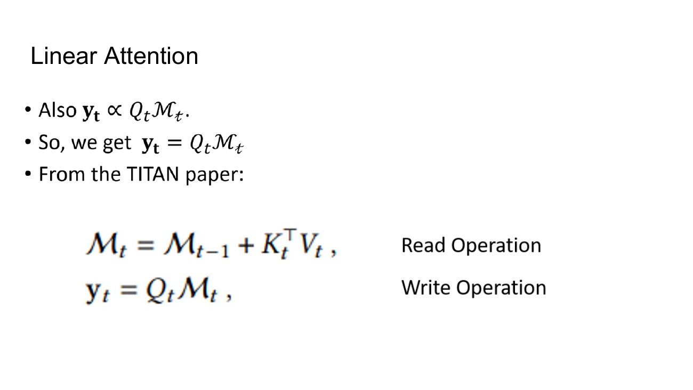
slide 18 · write with an outer product, read with the query
On the slide
Drop the denominator and the output is yt =
QtMt. Linear attention is now a memory
with one operation that stores and one that retrieves.
⚠ Watch out
The labels on the slide are swapped. Adding Kt⊤Vt
to M stores the pair, so it is the write. Multiplying by the query
retrieves, so yt = QtMt
is the read. The Titans paper labels them this way.
The running example with linear attention
Use the two pairs from slide 12, k1 = (1, 0) → v1 = (2, 1) and
k2 = (0.6, 0.8) → v2 = (0, 3). After both writes, reading with
k2 gives
k2M = (k2 ·
k1)v1 + (k2 · k2)v2
= 0.6 × (2, 1) + 1 × (0, 3) = (1.2, 3.6).
The answer should be (0, 3). The overlap between the keys leaks 0.6 of v1 into
the result, and nothing ever removes it. Each write only adds.
§6Surprise, momentum and forgetting
Titans changes linear attention's write in three steps. It writes
only the error, it carries surprise forward with momentum, and
it lets old memory decay.
Slide 19 / 48
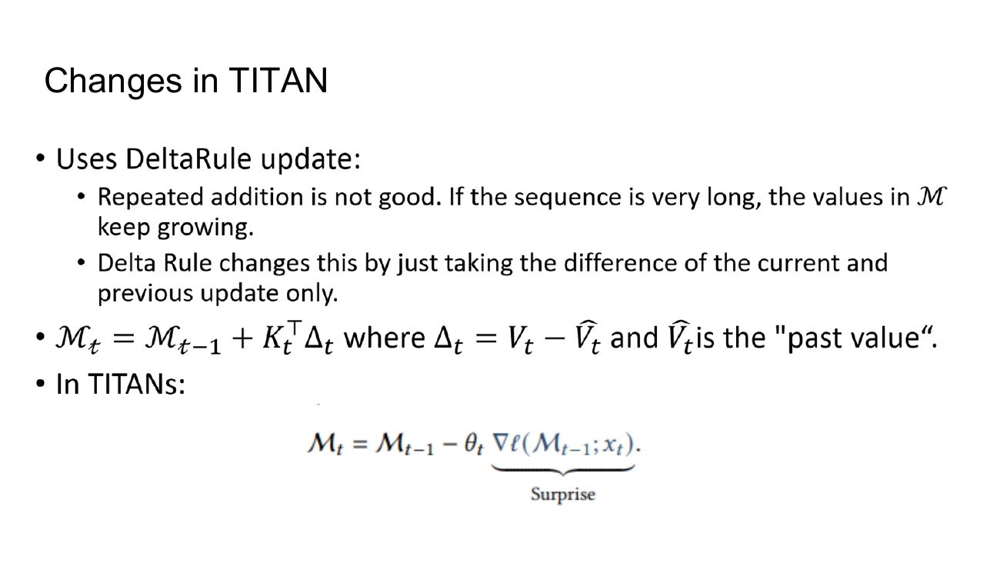
slide 19 · write the error, not the value
On the slide
Plain addition lets M grow without bound. The delta rule writes only the difference between
the new value and what the memory already returns. Titans writes this as a gradient step, and calls
the gradient the "surprise".
What V̂t is
V̂t = KtMt−1, the value
the memory currently returns for this key. If the memory already knows the pair, Δt
= 0 and nothing is written. The slide's phrase "difference of the current and previous update" is
looser than this. It is the difference between the true value and the memory's current prediction.
The running example with the delta rule
After the first write, M1 = k1⊤v1.
For the second pair, V̂2 = k2M1 = (1.2, 0.6), so
Δ2 = (0, 3) − (1.2, 0.6) = (−1.2, 2.4). Writing k2⊤Δ2
and reading back with k2 gives exactly (0, 3). The leak from slide 18 is gone.
Reading with k1 gives (1.28, 2.44), the same matrix and the same numbers as the
TTT-Linear example on slide 12.
Why the gradient form is the same thing
For a linear memory with loss ℓ = ‖kM − v‖2, the gradient is
2k⊤(kM − v). A step of size θ gives M +
2θk⊤(v − kM), which is the delta rule with step 2θ. Titans
keeps the gradient form because it also works when the memory is an MLP, where no simple
"difference" formula exists. The delta rule in
Assignment 3 is this
same update.
Slide 20 / 48
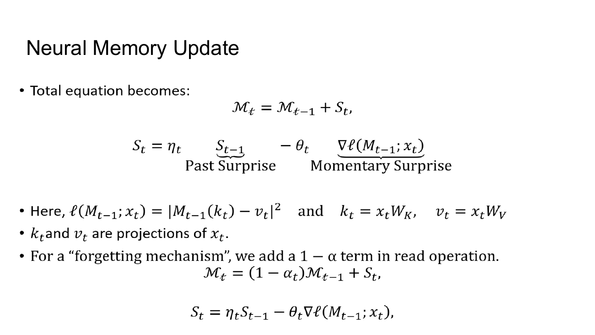
slide 20 · momentum on surprise, and a forget gate
On the slide
Two additions. The write St now carries a fraction
ηt of the previous write (past surprise) as well as the new gradient (momentary
surprise). The old memory is multiplied by (1 − αt) before the write, so it
slowly fades.
Why momentum helps a memory
This is momentum from Lecture 9,
applied to the memory instead of to the model's weights. A surprising token is often the start of
something worth remembering, and the next few tokens may look unsurprising on their own. Momentum keeps
writing for a while after the surprise.
A scalar example, with θ = 0.1, α = 0.1 and gradients −5 (a surprise), then −0.5, −0.5, −0.5.
| Token | Gradient | With η = 0.9: S, M | With η = 0: S, M |
|---|
| 1 | −5 | 0.5, 0.5 | 0.5, 0.5 |
| 2 | −0.5 | 0.5, 0.95 | 0.05, 0.5 |
| 3 | −0.5 | 0.5, 1.355 | 0.05, 0.5 |
| 4 | −0.5 | 0.5, 1.72 | 0.05, 0.5 |
Without momentum, the writes after the surprise are tiny and the forgetting cancels them, so
M sits at 0.5. With momentum, the surprise keeps contributing 0.45 per step and the memory
keeps building.
⚠ Watch out
The slide says the forgetting term is added in the "read operation". It multiplies the old memory
during the update, so it is part of the write (see the note on slide 18).
Slide 21 / 48
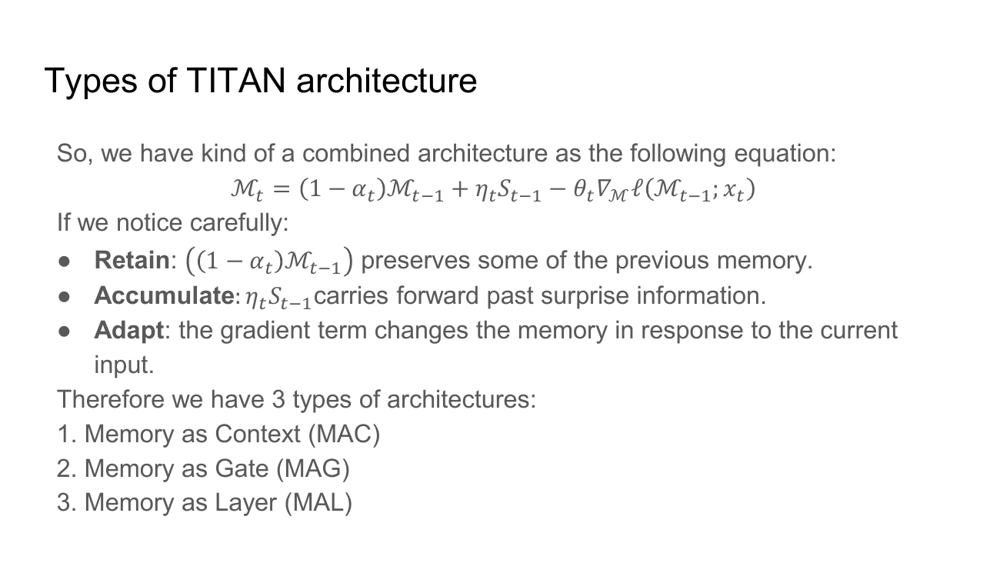
slide 21 · the full update in one line
On the slide
The whole update in one equation, with a name for each term.
The three knobs depend on the input
αt, ηt and θt carry a subscript
t because the model computes them from the current token. It can decide to forget quickly at
a topic change, or to write strongly at a surprising token. This is the same move as making Mamba's Δ
depend on the input in
Lecture 15. Setting
α = 0, η = 0 and a linear memory recovers the plain delta rule of slide 19.
The last line of the slide is a bridge. With the memory defined, the question is how to connect it
to attention, and the paper gives three answers.
§7MAC, MAG and MAL
The same memory module can sit beside attention in three places.
It can feed attention extra context, mix its output with
attention's, or run as a layer before it.
Slide 22 / 48
![Memory as Context. context_t = [h_t; p_1, p_2, ..., p_N; S^(t)]. We are updating the weight of M_{t−1} through forward pass in update eqn. Diagram with three bands: contextual memory (neural memory, retrieval, update; learning at test time), core (sequence, attention; in-context learning), persistent memory (learnable data-independent weights; fixed). Retrieved memory tokens and persistent tokens are concatenated before the current segment and fed to attention; attention output updates the memory and is combined with the memory output.](../assets/seminars/S-ttt/slide-22.png)
slide 22 · memory as context (MAC)
On the slide
In MAC, the sequence is processed in segments. For each segment S(t), the
model queries the long-term memory to get ht, then attention runs over
the retrieved memory, the persistent tokens p1…pN
and the segment itself. Attention's output then updates the memory.
An analogy
Think of reading a long book one chapter at a time. Before each chapter you write a short recap of
what you remember (the retrieval), add fixed notes on how to read the book (persistent memory), and
then read the chapter with the recap in view. Attention decides how much of the recap to use. After
the chapter, your memory is updated with what you read.
Slide 23 / 48
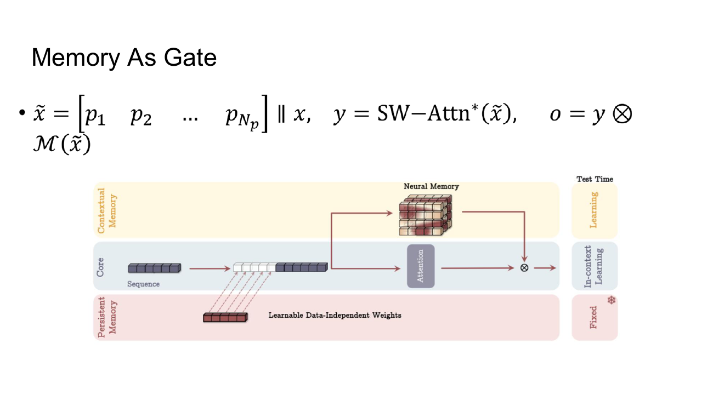
slide 23 · memory as gate (MAG)
On the slide
In MAG, the input (with persistent tokens in front) goes down two branches in parallel. One is
sliding-window attention and the other is the neural memory. A gate combines the two outputs.
Why two branches
Sliding-window attention is exact but only sees the last few thousand tokens
(Lecture 6). The memory sees
everything but only as a compressed summary. The gate lets each position choose how much to trust
each source, so a token that needs a precise recent match leans on attention and a token that needs
something from long ago leans on the memory.
Slide 24 / 48
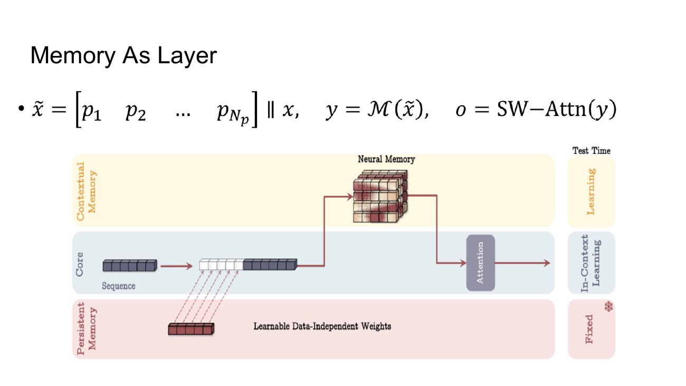
slide 24 · memory as layer (MAL)
On the slide
In MAL, the memory is a layer in the stack. Its output feeds sliding-window attention, which
produces the final output.
This is the usual hybrid design of a recurrent layer followed by an attention layer, of the kind
Lecture 14 discusses in its
section on hybrids. The only difference is that the recurrent layer here is a TTT-style memory.
Slide 25 / 48
slide 25 · trade-offs of the three
On the slide
Each variant gives up something. MAC lets attention look straight at retrieved memory but is the most
complex to build. MAG mixes the two flexibly but attention never sees the memory directly. MAL is the
simplest but has the weakest coupling between memory and attention.
One question that separates them
Can attention look at what the memory retrieved? In MAC it can, because the retrieved tokens are part
of its input. In MAG it cannot, because the two branches only meet at the gate. In MAL attention only
sees the memory's transformed output, never the memory as separate context. Coupling rises from
MAL to MAG to MAC, and so does complexity.
Slide 26 / 48
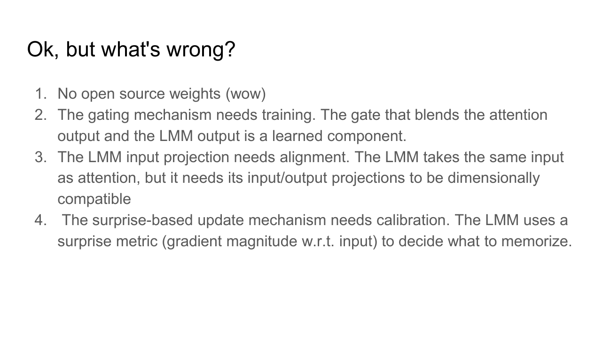
slide 26 · practical problems with Titans
On the slide
Titans is hard to use in practice. No trained weights were released. The gate, the projections into
and out of the long-term memory module (LMM), and the surprise-driven update all have to be trained
or tuned before any of it works.
Points 2 to 4 share a cause. None of these parts can be bolted onto an existing pretrained model.
They have to be learned together with it, which means pretraining from scratch. Slide 44 comes back
to this.
⚠ Watch out
In Titans the surprise is the gradient of the memory's loss with respect to the memory's
parameters, ∇Mℓ, as on slides 19 to 21. It is not a gradient with
respect to the input.
§8Fast and slow weights
A detour into where the vocabulary comes from. Fast weights change
within a sequence, slow weights change only during training.
Slide 27 / 48
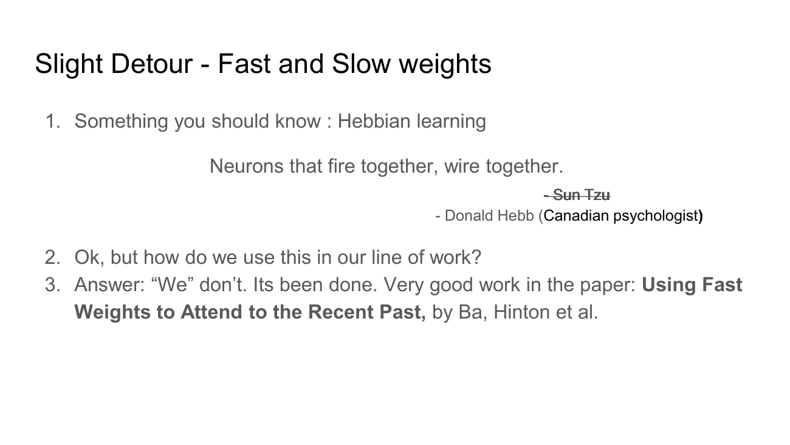
slide 27 · Hebbian learning
On the slide
Hebb's rule says the connection between two neurons strengthens when they are active at the same
time. Ba, Hinton and colleagues (2016) used it to give an RNN a second, fast-changing weight matrix.
Hebb's rule as math
If two units have activities a and b, Hebbian learning increases the weight between
them by an amount proportional to ab. For whole vectors that is an outer product,
ΔW ∝ ab⊤. You have already seen this shape. Linear attention's write
K⊤V on slide 17 is a Hebbian update between keys and values.
Slide 28 / 48
![Using Fast Weights to Attend to the Recent Past. Problem: RNNs keep forgetting; they compress history in a fixed sized vector h_t = f(W h_{t−1} + U x_t), where h_t, h_{t−1} are current and previous hidden states, W, U learned weights, x_t the input. What if we have a continuously updating weight matrix? Ba et al. proposed A_t = λA_{t−1} + η h_t h_tᵀ, where A_t is the fast-weight memory matrix, h the hidden state, η controls how much of the association is written, λ controls how much previous memory is retained. The h_t h_tᵀ outer product matrix contains information about associations in the hidden state.](../assets/seminars/S-ttt/slide-28.png)
slide 28 · a fast-weight matrix with decay
On the slide
A normal RNN squeezes all history into one vector ht. Ba et al. add a
matrix At that is updated every step by a decayed sum of outer products
of past hidden states. λ sets how fast old entries fade and η sets how strongly new ones are
written.
Fast and slow, side by side
| Slow weights W, U | Fast weights At |
|---|
| Changed by | backpropagation | the Hebbian rule above |
| Changes when | during training only | at every time step |
| Holds | general skills | what happened recently in this sequence |
Compare it with Titans' update on slide 21. λ plays the role of (1 − α) and ηhh⊤
plays the role of the write. The one thing missing is the error term of the delta rule. Fast weights
only add, like linear attention.
Slide 29 / 48
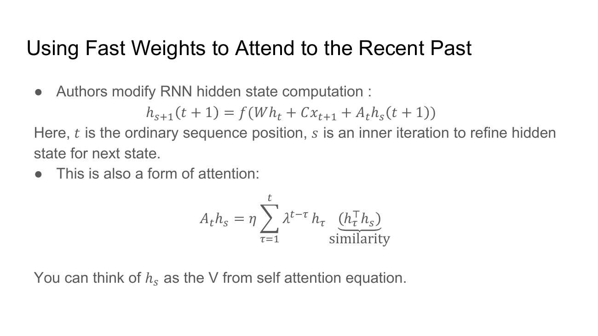
slide 29 · fast weights are attention over past states
On the slide
The next hidden state is refined in a few inner steps s, each adding
Aths to the usual input. Expanding
At shows that this term is a weighted sum of past hidden states, weighted
by how similar each one is to the current one, so it is a kind of attention.
A small example
Let h1 = (1, 0), h2 = (0, 1), λ = 0.5 and η = 1. Then
A2 = 0.5 h1h1⊤ +
h2h2⊤ = diag(0.5, 1). For a current state
hs = (0.8, 0.6),
A2hs = 0.5 × 0.8 ×
h1 + 1 × 0.6 × h2 = (0.4, 0.6).
Each past state comes back in proportion to its similarity with hs, and
the older one is discounted by λ. It works like attention with dot-product scores, no softmax and an
exponential decay with age.
⚠ Watch out
In attention terms, hs is the query. It is what gets compared
with every past state. The past states hτ are both the keys (inside the
similarity) and the values (the vectors being summed). The slide's suggestion to read
hs as V has the roles reversed.
Slide 30 / 48
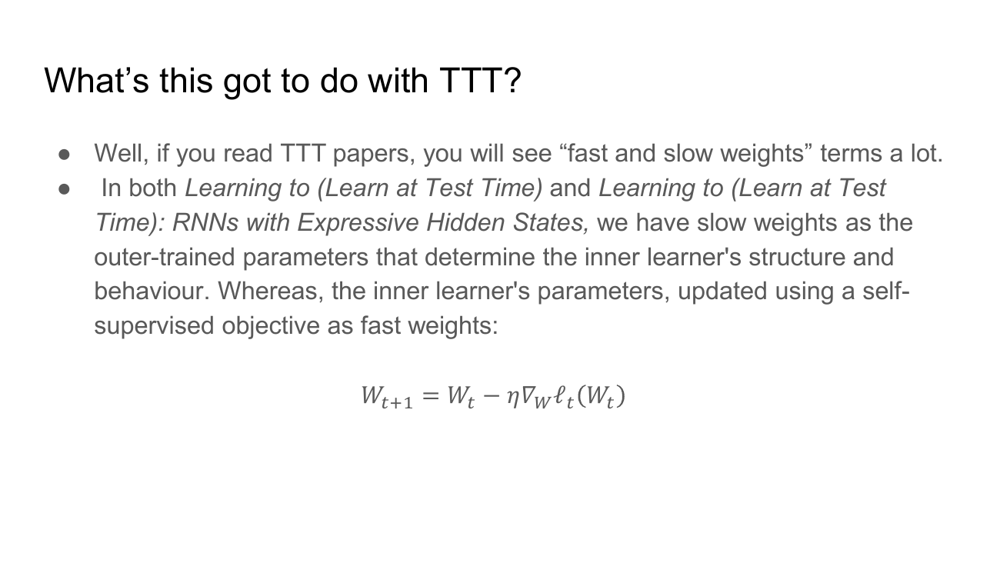
slide 30 · the TTT reading of fast and slow
On the slide
In TTT papers, the slow weights are everything the outer loop trains, and the fast weights are the
inner model's W, updated by gradient steps as the sequence is read.
Putting the whole talk on one axis
Every memory so far has fast weights and a rule for writing to them.
- Fast weights (Ba et al.) write hh⊤ with decay.
- Linear attention writes k⊤v with no decay.
- The delta rule and TTT-Linear write a gradient step on ‖kW − v‖2.
- Titans writes a gradient step with momentum and decay, and can use an MLP as the memory.
Moving down the list, the write rule gets closer to "train a model on the data you are reading".
§9In-Place TTT
Instead of adding a memory module, In-Place TTT (Feng et al., 2026)
lets the down-projection of each transformer MLP act as the fast
weights.
Slide 31 / 48

slide 31 · the question In-Place TTT asks
On the slide
Titans needs an extra module. In-Place TTT asks whether weights the transformer already has can serve
as fast weights. You need two things for TTT, some weights to update and a self-supervised task to
update them with.
The benefit is practical. If the fast weights are an existing layer, a pretrained transformer can be
turned into a TTT model without adding a new block that has to be trained from scratch.
Slide 32 / 48
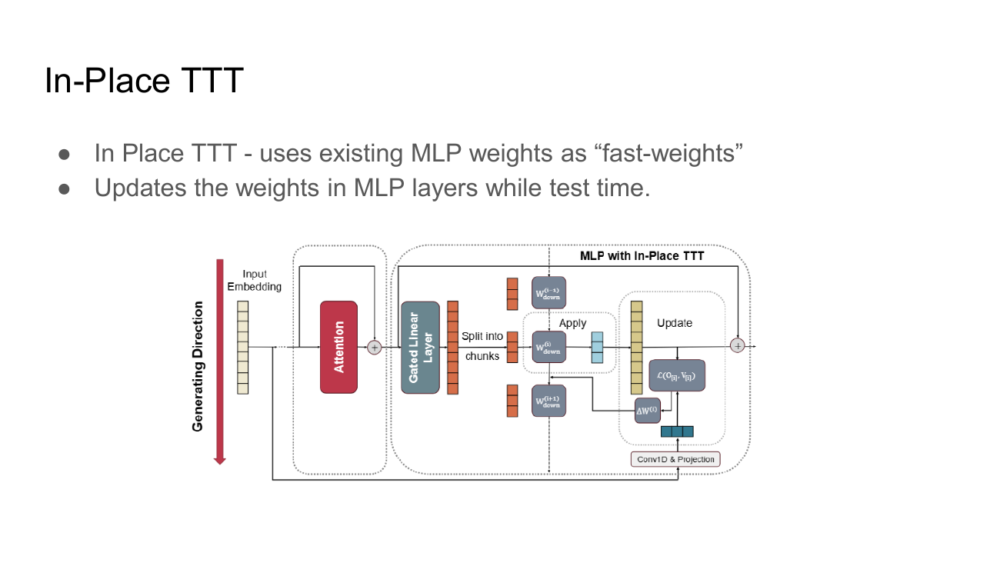
slide 32 · the MLP's down-projection becomes the memory
On the slide
The MLP is split into two parts. The gate and up-projections stay fixed. The down-projection
Wdown is updated chunk by chunk as the sequence is read. Each chunk is first
processed with the current Wdown (apply), then used to update it (update).
The order matters. A chunk is processed with weights built only from earlier chunks, so no token sees
information from its own future. That is what makes the scheme causal.
Slide 33 / 48
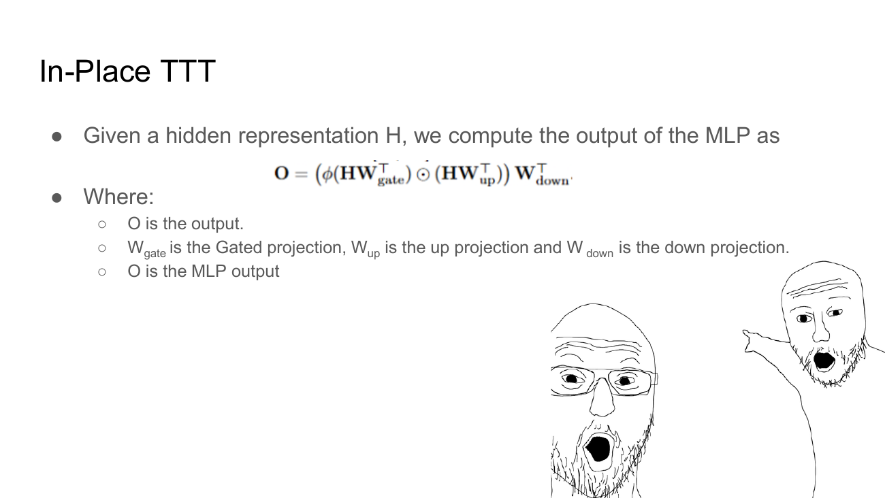
slide 33 · the gated MLP
On the slide
The standard gated MLP from Lecture 8.
The gate and up-projections expand H to width dff, and the
down-projection brings it back to dmodel.
Why the down-projection is a natural memory
Write Z for the expanded activations, so O = ZWdown⊤.
That is a linear map from a dff-dimensional "key" Z to a
dmodel-dimensional output, which is exactly the shape of the linear memory in §5.
Lecture 8 also described FFNs as key-value stores of knowledge. In-Place TTT lets that store be
written to while reading.
Slide 34 / 48
![Step 1: get intermediate representations Z = φ(H W_gateᵀ) ⊙ (H W_upᵀ) ∈ R^{n×d_ff}, and also value targets and outputs V, O ∈ R^{n×d_model}. (V is not the transformer V, it is derived using an aligned LM objective.) Step 2: chunk these so that we process in parallel. Apply operation: the current fast weights W_down^(i) process chunk Z[i], O[i] = Z[i](W_down^(i))ᵀ. Update operation: W_down^(i) is updated using Z[i] as keys and V[i] as values via one gradient descent step with loss L and learning rate η: W_down^(i+1) = W_down^(i) − η∇_W L(Z^(i)(W_down^(i))ᵀ, V^(i)).](../assets/seminars/S-ttt/slide-34.png)
slide 34 · apply, then update, chunk by chunk
On the slide
The activations Z act as keys and a separately computed target V acts as values. The
sequence is cut into chunks. For chunk i, compute the output with the current weights, then
take one gradient step that pushes Z[i]Wdown⊤
toward V[i].
Shapes, with numbers
With dmodel = 2048, dff = 8192 and chunks of 512 tokens,
Z[i] is 512 × 8192, Wdown is 2048 × 8192 and
V[i] is 512 × 2048. Both apply and update are a few large matrix
products per chunk, which GPUs handle well. One update per token would mean thousands of tiny
updates instead. §10 is about exactly this cost.
Slide 35 / 48
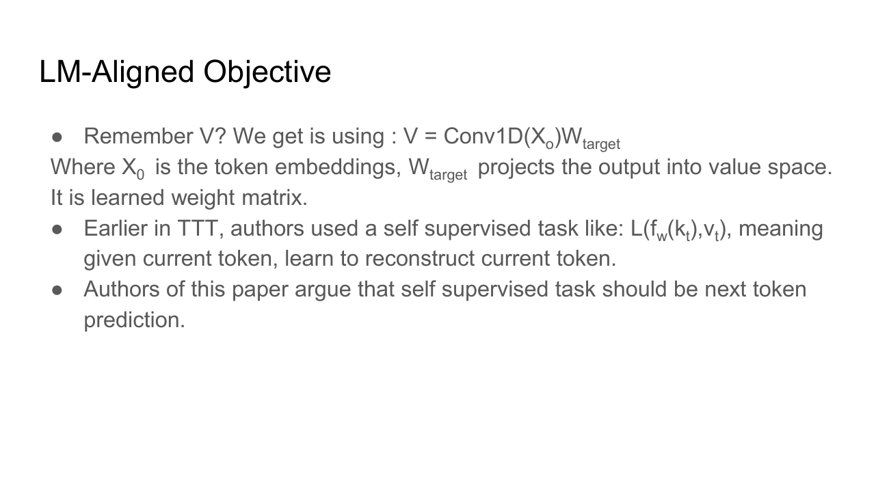
slide 35 · a target that looks ahead
On the slide
The targets are built from the token embeddings, mixed by a short 1D convolution along the sequence
and then projected. Earlier TTT reconstructed the current token. In-Place TTT argues that, for a
language model, the inner task should be about the next token.
Why the target should match the outer task
The outer loop trains for next-token prediction. If the inner loop memorises "what is this token",
the fast weights may store things the model never needs. If it memorises "what tends to come next
after this kind of context", every write is directly useful to the outer task. The convolution lets
the target at a position include neighbouring tokens, which is how future information gets into
it. Because each chunk is applied before it is used for an update (slide 32), that future
information only reaches later chunks.
Slide 36 / 48
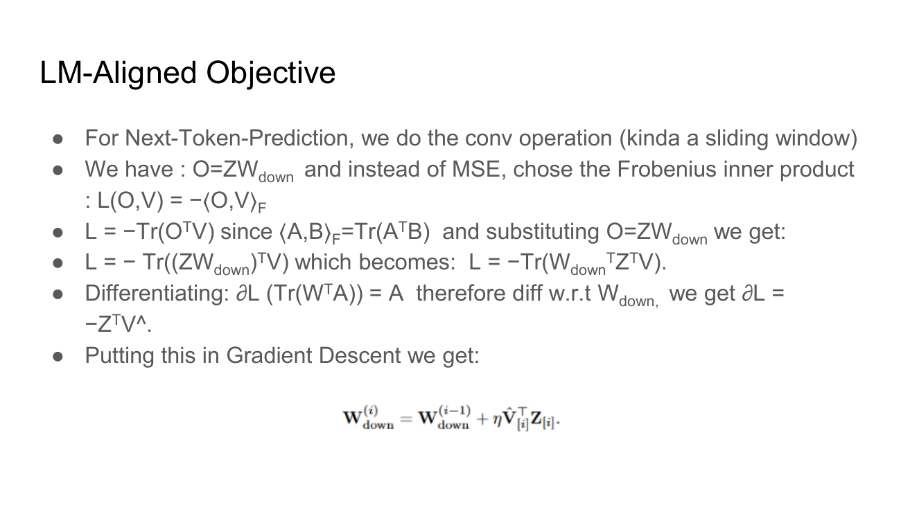
slide 36 · the update in closed form
On the slide
The loss is the negative Frobenius inner product between output and target, −⟨O,
V⟩F, rather than squared error. Its gradient is simple, so one gradient step adds
a matrix product of targets and activations to Wdown.
What the loss rewards
⟨O, V⟩F sums the products of matching entries, so for each token it is
the dot product between the output and the target. Making it larger means making each output point
in the direction of its target. The update adds ηV⊤Z, a sum of outer
products of targets and keys, which is the Hebbian write of slide 27 with the target as the value.
One token, by hand
Take dff = 2 and dmodel = 1, with Z = (1, 2), target
V = 3 and Wdown = (0.5, −0.5). The output is 0.5 − 1 = −0.5 and the loss
is −(−0.5 × 3) = 1.5. With η = 0.1 the update adds 0.1 × 3 × (1, 2) = (0.3, 0.6), so
Wdown becomes (0.8, 0.1). The output is now 0.8 + 0.2 = 1.0 and the loss is −3.
⚠ Notation
The slide writes O = ZWdown, but slides 33 and 34 use O =
ZWdown⊤. With the transpose (the convention used above), the
gradient is −V⊤Z and the update is +ηV⊤Z,
which matches the slide's final line. Without it, the gradient would be −Z⊤V,
as in the middle line. Both are right for their own convention.
Unlike squared error, this loss has no minimum. Making Wdown larger always makes
the dot products larger. The step size η therefore has to stay small, since each update simply adds
more of the same direction.
Slide 37 / 48
![Figure 2: sliding window perplexity at context lengths 2k to 32k on the Pile for 500M and 1.5B models. In-Place TTT has the lowest perplexity, below LaCT, DeltaNet, GLA and SWA; SWA plateaus around 10.2 (500M) and 8.8 (1.5B). Table 3: evaluation of 4B models. Full Attn baseline: HellaSwag 55.67, ARC-E 64.52, ARC-C 33.19, MMLU 36.43, PIQA 72.63, RULER-4k 45.77, RULER-8k 38.09, RULER-16k 6.58. SWA baseline: 54.92, 64.18, 32.85, 36.06, 72.58, 14.77, 9.91, 5.07. In-Place TTT with Full Attn: 55.85, 64.98, 32.34, 37.42, 73.29, 49.98, 43.82, 19.99. In-Place TTT with SWA: 55.24, 64.60, 33.70, 36.48, 72.03, 28.33, 26.80, 7.57.](../assets/seminars/S-ttt/slide-37.png)
slide 37 · results
On the slide
Results from the In-Place TTT paper. In the plots, perplexity keeps falling as context grows, and
In-Place TTT stays below the other efficient models. The table compares 4B models on short
commonsense benchmarks and on RULER, a long-context retrieval benchmark.
Where the gains are
On the short benchmarks the numbers barely move, by less than one point either way. The changes
show up on long context.
| Backbone | RULER-4k | RULER-8k | RULER-16k |
|---|
| Full attention | 45.77 → 49.98 | 38.09 → 43.82 | 6.58 → 19.99 |
| Sliding window | 14.77 → 28.33 | 9.91 → 26.80 | 5.07 → 7.57 |
The sliding-window rows show the idea most clearly. A window cannot see tokens that have left it,
so its RULER scores collapse. With In-Place TTT, information from those tokens survives in the
updated MLP weights, and RULER-4k roughly doubles. This is a test of whether the model can
retrieve old information, and the fast weights are where that information is kept.
§10LaCT: large-chunk TTT
Test-Time Training Done Right (Zhang et al., 2025) keeps the TTT
idea but updates the fast weights once per large chunk, which
makes the update fast on a GPU.
Slide 38 / 48
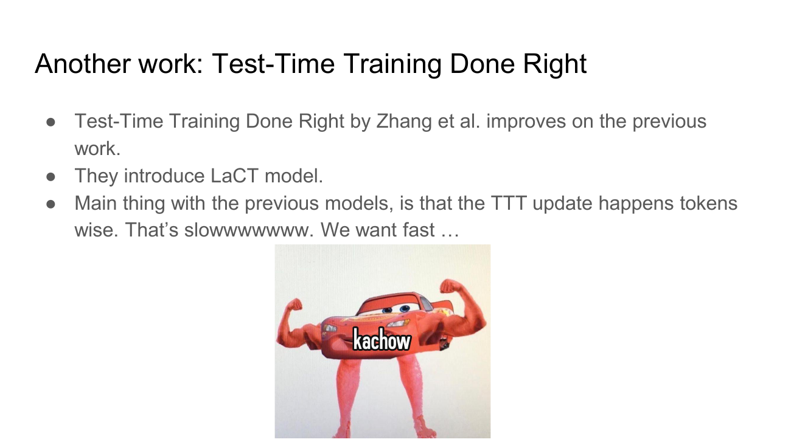
slide 38 · per-token updates are slow
On the slide
Earlier TTT layers update the fast weights after every token, which makes them slow. LaCT
(large-chunk TTT) fixes that.
Why per-token updates are slow
A per-token update of a d × d matrix adds one outer product. The GPU has to read
and write all d2 numbers of W to do about 2d2
arithmetic operations, roughly one operation per number moved. GPUs can do far more arithmetic than
that per byte of memory traffic, so most of the time is spent waiting on memory. The same
memory-bound situation came up for decoding in
Lecture 13.
Slide 39 / 48
![Model details. Instead of performing gradient updates token-by-token, LaCT groups tokens into large chunks (e.g. chunk sizes of b = 16 up to thousands of tokens). It computes gradient updates on the combined chunk at once, giving matrix-matrix multiplications (GEMMs) that map efficiently to GPU tensor cores. For a chunk of size b, LaCT accumulates the loss over all key-value pairs {k_i, v_i} inside the chunk: L_chunk = Σ_{i=1}^b η_i · L(f_W(k_i), v_i), where η_i is a token-level dynamic learning rate predicted via an input projection.](../assets/seminars/S-ttt/slide-39.png)
slide 39 · one update per chunk
On the slide
LaCT sums the inner loss over a whole chunk of b tokens, each weighted by its own learning
rate ηi, and takes one gradient step on the sum. Chunks range from 16 tokens to
many thousands.
What one chunk update costs
For a linear memory with the dot-product loss of slide 41, the chunk gradient is
−Σi ηiviki⊤.
Stacked as matrices, that is a single product of a d × b matrix with a
b × d one. The GPU still reads and writes W once, but now does about
2bd2 operations for it, b times as much useful work per byte. With
b = 2048 that is enough to keep the tensor cores busy.
The price
Tokens inside a chunk cannot benefit from each other's updates, since the weights only change at the
end of the chunk. The next slide shows how LaCT handles that.
Slide 40 / 48
![Figure 2: the basic diagram for a LaCT block. Window attention with a residual, then a Large-Chunk TTT layer: the input is split into large chunks, each projected to V, K, Q; V and K feed Update, Q feeds Apply with o_i = f_W(q_i); then a feed-forward block. The large-chunk TTT layer updates the fast weight W to store history chunk information, while window attention handles the internal structure within the chunk. Solid lines show flow over depth, dashed lines show the fast weight W passing through chunks over time.](../assets/seminars/S-ttt/slide-40.png)
slide 40 · window attention inside, TTT across chunks
On the slide
A LaCT block has window attention, then the large-chunk TTT layer, then a feed-forward layer. Window
attention handles relations between tokens inside a chunk. The fast weights carry information from
one chunk to the next.
This fills the gap from slide 39. Inside a chunk, nearby tokens can still see each other through
exact attention. Across chunks, everything older is compressed into W. It is the same
short-term and long-term split as Titans in §4, with the chunk size setting where one ends and the
other begins.
Slide 41 / 48
![Model details. The fast weight W is updated via the computed gradient g = ∇_W L_chunk. Rather than simple linear projections, LaCT uses a bias-free SwiGLU-MLP as its fast-weight memory network f_W(x) = W_2[SiLU(W_1 x) ⊙ (W_3 x)], with a dot-product reconstruction loss L(f_W(k_i), v_i) = −f_W(k_i)ᵀv_i. They also use a Muon optimizer to stabilize the fast weight update. Results are competitive with impressive speedup, since it processes batches instead of per token (even across modalities).](../assets/seminars/S-ttt/slide-41.png)
slide 41 · SwiGLU memory, dot-product loss, Muon
On the slide
The fast-weight memory is a small SwiGLU MLP, trained with the same kind of dot-product loss as
In-Place TTT. The update uses Muon instead of a plain gradient step.
Why Muon here
A chunk gradient sums many outer products, and a few large directions can dominate it. Plain
gradient descent would then write mostly those directions. Muon (Lecture 9) orthogonalises the update, which
evens out its singular values, so every direction in the chunk gets written at a similar strength.
The dot-product loss has no minimum (see slide 36), so keeping the update well-scaled also keeps the
weights from growing without control.
Slide 42 / 48
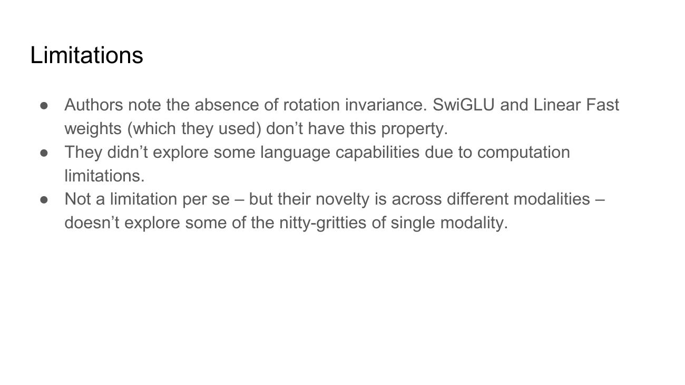
slide 42 · limitations of LaCT
On the slide
The limitations the authors list. The fast-weight networks they tried lack rotation invariance.
Compute limits stopped them from testing some language abilities. And because the paper spans
several modalities, it goes less deep into any one of them.
The slide doesn't say more about rotation invariance, so treat it as a pointer to the paper. The
second point is the one to remember for language models. The long-context results are promising,
but not every language ability was tested.
Slide 43 / 48
![Figure 5: Language model results. (a) 760M validation loss by token index up to 32k and (c) 3B validation loss: LaCT (Ours Muon, Ours Momentum) reaches lower per-position loss at large token indices than GLA SWA and DeltaNet SWA; full Transformer is lowest, Transformer SWA flattens. (b) 760M S-NIAH-1 and (d) 3B S-NIAH-2 retrieval accuracy by sequence length: Ours Muon stays high (above 90% at 32k for 760M, about 70–83% at 12–16k for 3B), Ours Momentum and GLA fall sharply. Our Muon variant consistently outperforms our Momentum variant.](../assets/seminars/S-ttt/slide-43.png)
slide 43 · LaCT language-model results
On the slide
LaCT's language results. Loss at late positions in a 32k-token sequence is lower than for GLA and
DeltaNet. On needle-in-a-haystack retrieval (S-NIAH), the Muon version holds up far better than the
momentum version.
How to read the panels
- Loss by token index (a, c). A curve that keeps falling at large indices means the
model is using its long context. Transformer SWA flattens because its window forgets. LaCT keeps
falling, though it stays above full attention.
- Retrieval (b, d). Hide a fact early in a long text and ask for it at the end.
The Muon variant keeps most of the accuracy as the text grows, while the momentum variant drops
close to GLA. Only the update rule differs, so the choice of inner optimiser decides how much
the memory can hold.
§11Research notes and wrap-up
The talk ends with the presenter's own experience of TTT research,
then thanks and references.
Slide 44 / 48
![If you want to pursue this as a research topic. Mostly covered by a meme of a train labelled GPU RESOURCES hitting a school bus labelled TTT RESEARCH. Text underneath: There are levels to this pain. Level 1: start with a pretrained model, add auxiliary modules for fast weights, and a task to train the fast weight. Level 2: fast weights and slow weights are in different spaces, mostly depending on the input test distribution, so some finetuning is required to align them. Level 3: long context retrieval; TTT is closely associated with it; long context means high GPU usage (even with the deployment strategies Shruthi will present). Essentially a lot of pretraining is required, especially to align the fast weight space with the slow weight space. So beware.](../assets/seminars/S-ttt/slide-44.png)
slide 44 · levels of pain
On the slide
The meme covers most of the text. The presenter tried TTT as a research project and describes three
levels of difficulty. First, adding fast-weight modules and a self-supervised task to a pretrained
model. Second, aligning the fast weights with the pretrained slow weights, which needs fine-tuning.
Third, long-context evaluation, which needs a lot of GPU memory.
Why alignment is the hard part
The slow weights of a pretrained model were trained without any fast weights in the loop. A new
fast-weight module starts with no idea what the surrounding layers expect, and the surrounding layers
have never seen its output. This is the same problem slide 26 raised about Titans. TTT works best
when the two kinds of weights are trained together from the start, which means pretraining. The
compression methods from the Efficient
Language Models seminar help with deployment but not with that pretraining cost.
Slide 45 / 48
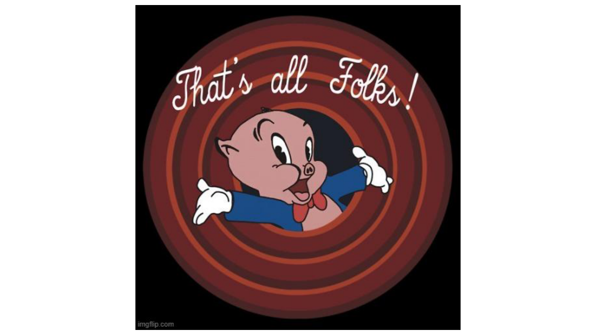
slide 45 · end of the talk
On the slide
The end of the talk.
Slide 46 / 48
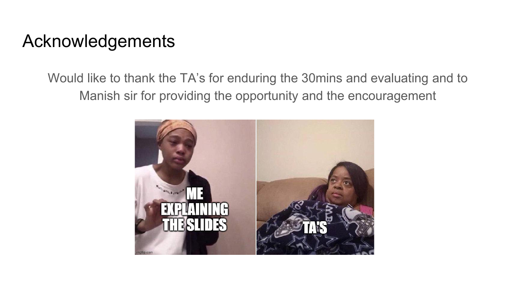
slide 46 · acknowledgements
On the slide
Thanks to the TAs and the instructor.
Slide 47 / 48
slide 47 · questions
On the slide
The call for questions.
Questions to check yourself with
- Why can a model train on a test input that has no label, and which parameters does Sun et al.'s
method update?
- In a TTT layer, what are the state, the update rule and the output rule? Which weights belong to
the outer loop?
- Run k1 = (1, 0) → (2, 1) and k2 = (0.6, 0.8) → (0, 3)
through linear attention and through the delta rule. Why do the two answers for k2
differ?
- In Titans' update, what does each of α, η and θ control, and what do you get if α = η = 0?
- How does MAC differ from MAG in what attention can see?
- Why does In-Place TTT apply a chunk before using it for an update?
- Why is a chunk update faster on a GPU than b per-token updates with the same total
arithmetic?
Slide 48 / 48
![Citations. Ba, J., Mnih, V., and Kavukcuoglu, K. 2016. Using fast weights to attend to the recent past. NeurIPS 29. Behrouz, A., Zhong, P., and Mirrokni, V. 2025. Titans: Learning to memorize at test time. NeurIPS 38. Feng, G., Luo, S., Hua, K., Zhang, G., Huang, W., He, D., and Cai, T. 2026. In-place test-time training. ICLR. Sun, Y., Wang, X., Liu, Z., Miller, J., Efros, A., and Hardt, M. 2020. Test-time training with self-supervision for generalization under distribution shifts. ICML 37. Sun, Y., Li, X., Dalal, K., et al. 2025. Learning to (learn at test time): RNNs with expressive hidden states. ICML 42. Zhang, T., Bi, S., Hong, Y., et al. 2025. Test-time training done right. arXiv:2505.23884.](../assets/seminars/S-ttt/slide-48.png)
slide 48 · citations
On the slide
The six papers the talk draws on.
⚠ Watch out
The fast-weights paper is by Ba, Hinton, Mnih, Leibo and Ionescu, as slide 27 says. The author list
on this slide (Ba, Mnih and Kavukcuoglu) belongs to a different paper. The list also leaves out the
first "Learning to (Learn at Test Time)" paper from slide 8.
Test-time training gets a learning signal from an input that has
no label by inventing a task whose answer is in the input itself,
such as the rotation of an image or the value hidden behind a key.
Sun et al. used that to adapt an image model to shifted test data.
Applied to a sequence, the same idea turns a layer's hidden state
into the weights of a small model that takes one gradient step per
token. For a linear model that step is the delta rule, which
fixes linear attention's habit of only ever adding to memory.
Titans adds momentum, so a surprising token keeps being written
for a while, and a forget gate, and then attaches the memory to
attention as context, as a gate or as a layer. Fast weights are
the older name for the same thing. In-Place TTT reuses the MLP
down-projection as the memory and trains it toward next-token
targets, and LaCT makes updates fast by doing them once per large
chunk with window attention covering the inside of each chunk.
For an exam, be able to run a two-token example through linear
attention, the delta rule and TTT-Linear by hand, and to say which
weights change at test time in each method.